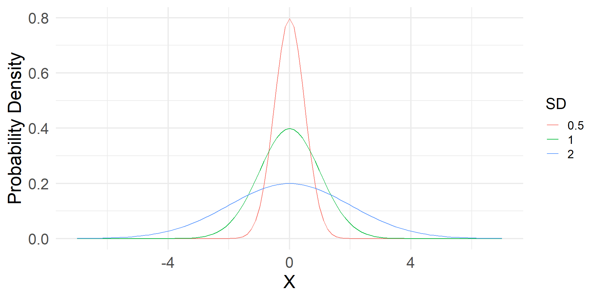
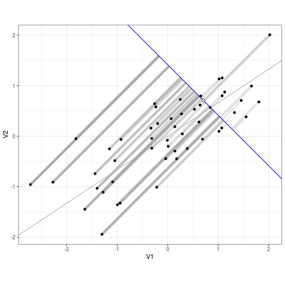
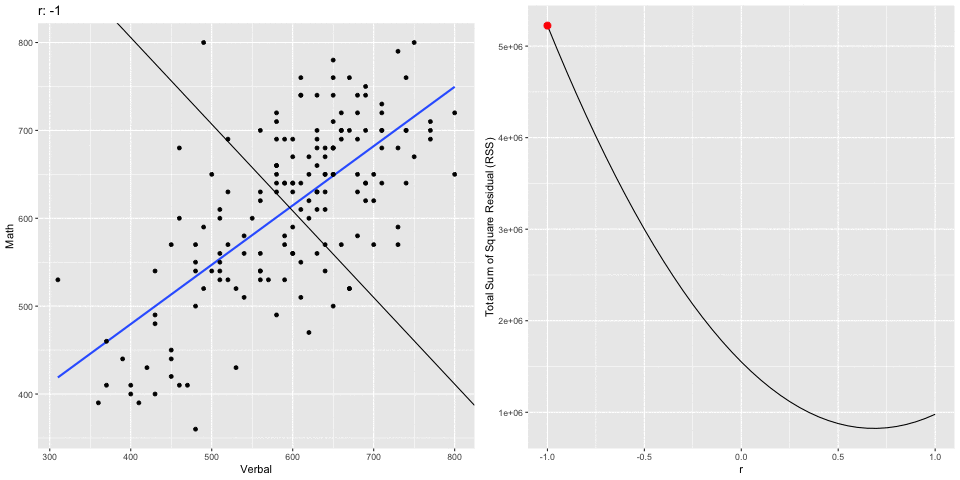
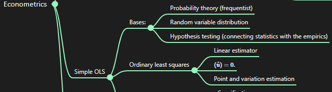

Simple OLS and Properties of Estimators
Large N & Leeuwenhoek (70700173)
Yue Hu
Tsinghua University
Overview
- Road to OLS
- OLS Principles
- Goal
- Model
- Uncertainty
- OLS Components
- Coefficients
- Variances/SEs
Where are We
Goal: Understanding data patterns in terms of random variable
Path through
Description
- Single: Moments
- Relation: Correlation
Distribution
- Probability theory
- PDF/CDF
- Confidence intervals/p-values
Hypothesis testing
- Significance
Path forward ☆
Linear (OLS)
- Simple linear regression
- Multiple regression
↓
Generalized linear
- MLE(Binary/Ordered/Nominal)
↓
Nonlinear
- Marginal effects & Moderation
Review: Expectation
\[\begin{align} E(X)_{discrete} =& \sum^n_{i = 1} X_if(X_i).\\ E(X)_{continuous} =& \int^{+\infty}_{-\infty}X_if(X_i)dX,\\ \sigma^2 =& E[X - E(X)]^2, \\ =& E[(X - \mu)^2],\\ =& E(X^2 - 2X\mu + \mu^2),\\ =& E(X^2) - 2\mu E(X) + \mu^2,\\ =& E(X^2) - \mu^2. \end{align}\]
\[\begin{align} cov(X, Y) =& E[X - E(X)][Y - E(Y)],\\ =& E[XY - X\cdot E(Y) -\\ &Y\cdot E(X) + E(X)E(Y)],\\ =& E(XY) - E(Y)E(X) -\\ &E(X)E(Y) + E(X)E(Y),\\ =& E(XY) - E(X)E(Y). \end{align}\]
Review (Continued): Variance
\[\begin{align} var(aX + b) =& E[(aX + b) - E(aX + b)]^2 = E[aX - aE(X)]^2, \\ =& a^2E[X - E(X)]^2 = a^2var(X). \end{align}\]
\[var(aX_1 + bX_2+ c) = a^2var(X_1) + b^2var(X_2) + 2ab\cdot cov(X_1, X_2).\]
When X1 is i.i.d., \[var(a_1X_1 + a_2X_2 + ... + a_nXn) = var(\sum a_iX_i) = \sum a_i^2var(X_i).\]
\[var(\bar X) = var(\frac{\sum X_i}{n}) = \sum^n_{i = 1}\frac{var(X_i)}{n^2} = \frac{n\sigma^2}{n^2} = \frac{\sigma^2}{n}\]
Review (Continued): Property of Estimator \(\hat \theta\)
- Unbiased: On average, the estimator gives the right answer, formally, \(E(\hat\sigma) = \sigma.\)
- Consistent: As the sample size increases, the variance decreases.
- Efficiency: Smallest variance among unbiased estimators1
Ordinary Least Squares (OLS)
Substantively, how does some outcome variable Y change when some explanatory variable X changes?
One type of simulation of the reality among many others (unnecessarily the best one).

OLS Component: Linear Estimator
What’s linear?
\[\begin{align} Y_i =& \beta_0 + \beta_1X_i + ui;\\ Y_i =& \beta_0 + \frac{\beta_1}{X_i} + ui;\\ Y_i =& \beta_0 + \beta_1ln(X_i) + ui;\\ Y_i =& \beta_0 + X_i^{\beta_1} + ui;\\ Y_i =& \frac{1}{\beta_0} + \frac{X_i}{\beta_1} + ui. \end{align}\]
The outcome variable changes linearly with the explanatory variable.
 Estimand/parameter, estimator, estimate
Estimand/parameter, estimator, estimate
OLS Formally
\[\begin{align} Y_i =& \beta_0 + \beta_1X_1 + u_i.\\ E(Y_i|X_i) =& E(\beta_0 + \beta_1X_1 + u_i|X_i),\\ =& E(\beta_0|X_i) + E(\beta_1X_1|X_i) + E(u_i|X_i),\\ =& \beta_0 + \beta_1X_i + E(u_i|X_i). \end{align}\]
ui: Things we don’t know (or human errors) but hope to be zero.
Sample Regression Function (SRF)
\[\begin{align} Y_i =& (\hat\beta_0 + \hat\beta_1X_i) + \hat u_i,\\ =& \hat Y_i + \hat u_i.\\ =& E(Y_i|X_i) + u_i,\\ \Leftrightarrow u_i =& Y_i - E(Y_i|X_i). \end{align}\]
A Good Estimator → Minimizing Expected ui
⇔ β0 and β1 that make \(\sum[Y_i - (\hat\beta_0 + \hat\beta_1X_i)]^2 = 0\)
\[\begin{align} \frac{\partial\sum[Y_i - (\hat\beta_0 + \hat\beta_1X_i)]^2}{\partial\hat\beta_1} = -\sum 2X_i(Y_i - \hat\beta_0 - \hat\beta_1X_i) =& 0\\ \Leftrightarrow \sum X_iY_i - \sum X_i\hat\beta_0 - \sum\hat\beta_1 X_1^2 =& 0\\ \sum X_iY_i =& \sum X_i\hat\beta_0 + \sum\hat\beta_1 X_1^2\\ \sum X_iY_i - \sum X_i(\bar Y - \hat\beta_1\bar X) - \sum\hat\beta_1 X_1^2 =& 0\\ \sum X_iY_i - \sum X_i\bar Y + \sum X_i\hat\beta_1\bar X - \sum\hat\beta_1 X_1^2 =& 0\\ \sum X_i(Y_i - \bar Y) + \hat\beta_1\sum X_i(\bar X - X_i) =& 0\\ \sum X_i(Y_i - \bar Y) =& \hat\beta_1\sum X_i(X_i - \bar X) \end{align}\]
A transformation gadget:
\[\begin{align} \sum X_i(Y_i - \bar Y) =& \sum X_i(Y_i - \bar Y) - \bar X(n\bar Y - n\bar Y)\\ =& \sum X_i(Y_i - \bar Y) - \bar X(\sum Y_i - \sum\bar Y)\\ =& \sum X_i(Y_i - \bar Y) - \bar X\sum (Y_i - \bar Y)\\ =& \sum (X_i - \bar X)(Y_i - \bar Y) \blacksquare \end{align}\]
\[\begin{align} Given \sum(X_i - \bar X)(Y_i - \bar Y) =& \sum X_i(Y_i - \bar Y)\\ \sum X_i(Y_i - \bar Y) =& \hat\beta_1\sum X_i(X_i - \bar X) (Last\ page)\\ \sum (X_i - \bar X)(Y_i - \bar Y) =& \hat\beta_1\sum (X_i - \bar X)(X_i - \bar X)\\ \hat\beta_1 =& \frac{\sum (X_i - \bar X)(Y_i - \bar Y)}{\sum (X_i - \bar X)^2}. \end{align}\]
Coefficient: β0
\[\begin{align} \frac{\partial\sum[Y_i - (\hat\beta_0 + \hat\beta_1X_i)]^2}{\partial\hat\beta_0} =& -\sum 2(Y_i - \hat\beta_0 - \hat\beta_1X_i) = 0\\ \Leftrightarrow\sum Y_i - \sum\hat\beta_0 - \sum\hat\beta_1X_i =& 0\\ \sum Y_i =& \sum\hat\beta_0 + \sum\hat\beta_1X_i\\ =& n\hat\beta_0 + \hat\beta_1\sum X_i\\ \hat\beta_0 =& \frac{\sum Y_i}{n} - \hat\beta_1\frac{\sum X_i}{n}\\ =& \bar Y - \hat\beta_1\bar X \end{align}\]
Normal equations
\[\begin{align} \sum Y_i =& n\hat\beta_0 + \hat\beta_1\sum X_i\\ \sum X_iY_i =& \sum X_i\hat\beta_0 + \sum\hat\beta_1 X_1^2 \end{align}\]
Coefficient: β11
\[\begin{align} \hat\beta_1 =& \frac{\sum (X_i - \bar X)(Y_i - \bar Y)}{\sum (X_i - \bar X)^2}\\ =& \frac{\sum (X_i - \bar X)(Y_i - \bar Y)}{\sqrt{\sum (X_i - \bar X)^2}\sqrt{\sum (Y_i - \bar Y)^2}}\cdot\frac{\sqrt{\sum (Y_i - \bar Y)^2}}{\sqrt{\sum (X_i - \bar X)^2}}\\ =& r_{X, Y}\frac{s_Y}{s_X} \end{align}\]
So when the variance of Y(sY) increases, β1 increases.
Special case: Standardized X and Y, i.e., \(s_Y, s_X\) are 1s, then,
\[\beta_1 = r_{X, Y}\frac{s_Y}{s_X} = r_{X,Y}.\]
Linearity of Coefficient
Remember \(\sum X_i(Y_i - \bar Y) = \sum(X_i - \bar X)(Y_i - \bar Y).\)
\[\begin{align} \hat\beta_1 =& \frac{\sum (X_i - \bar X)(Y_i - \bar Y)}{\sum (X_i - \bar X)^2},\\ =& \frac{1}{\sum (X_i - \bar X)^2}\sum (X_i - \bar X)Y_i,\\ =& \frac{1}{\sum (X_i - \bar X)^2}\sum (X_i - \bar X)(\beta_0 + \beta_1X_i + u_i),\\ =& \frac{1}{\sum (X_i - \bar X)^2}[\sum (X_i - \bar X)(\beta_0 + \beta_1X_i) + \sum (X_i - \bar X)u_i],\\ =& \frac{\sum (X_i - \bar X)(\beta_0 + \beta_1X_i)}{\sum (X_i - \bar X)^2} + \frac{\sum (X_i - \bar X)u_i}{\sum (X_i - \bar X)^2}. \end{align}\]
Let \(k_i=\frac{X_i - \bar X}{\sum (X_i - \bar X)^2},\) then \(\hat\beta_1 = \beta_1 + \sum k_iu_i\).
- A linear combination of errors
- Min/max(X) influences a lot.
Characteristics of OLS Coefficients
- Calculated using observed data
- Unique point estimates
- SRF passes through \((\bar X, \bar Y)\)
- \(\bar{\hat Y} (\text{predicted}) = \hat Y (\text{observed})\), \(\frac{\sum\hat Y_i}{n} = \frac{\sum Y_i}{n}\)
- \(\bar{\hat u_i} = \frac{\sum{\hat u_i}}{n} = 0\)
- \(\sum X_i\hat u_i = 0\)
\(\bar{\hat u_i} = \frac{\sum{\hat u_i}}{n} = 0\)
\[\begin{align} \frac{\partial\sum[Y_i - (\hat\beta_0 + \hat\beta_1X_i)]^2}{\partial\hat\beta_0} =& 0\\ -2\sum[Y_i - (\hat{\beta_0} + \hat{\beta_1}X_i)] =& 0\\ \sum (Y_i-\hat Y_i) = \sum{\hat u_i} =& 0\\ \Rightarrow \frac{\sum{\hat u_i}}{n} = \bar{\hat u_i} =& 0 \blacksquare \end{align}\]
\(\sum X_i\hat u_i = 0\)
\[\begin{align} cov(X_i, u_i) =& 0,\\ \frac{\sum(X_i - \bar X)(\hat u_i - \bar{\hat u_i})}{n-1} =& 0,\\ \frac{\sum X_i\hat u_i}{n-1} =& 0. \blacksquare \end{align}\]

Estimating Uncertainty for OLS: β1
\[\begin{align} \sigma^2 =& var(u_i|X),\\ =& var(Y_i - \hat\beta_0 - \hat\beta_1X_i|X),\\ =& \frac{\sum(\hat u_i^2)}{n - 2},\\ =& \hat\sigma^2. \end{align}\]
\[\begin{align} var(\hat \beta_1|X) =& var(\frac{\sum(X_i - \bar X)(Y_i - \bar Y)}{\sum(X_i - \bar X)^2}|X)\\ =& var(\beta_1 + \sum k_iu_i|X)\\ =& var(\sum k_iu_i|X), \text{given}\ \beta_1\sum k_iX_i \text{constant}\\ =& \sum var(k_iu_i|X), \text{assuming}\ u_i\ \text{independent}\\ =& \sum k_i^2 var(u_i|X)\\ =& \sum[\frac{X_i - \bar X}{\sum (X_i - \bar X)^2}]^2\sigma^2\\ =& \frac{\sum(X_i - \bar X)^2}{[\sum (X_i - \bar X)^2]^2}\sigma^2 = \frac{\sigma^2}{\sum (X_i - \bar X)^2} \end{align}\]
Uncertainty of OLS Estimators: β0
\[\begin{align} var(\hat \beta_0|X) =& var(\bar Y - \hat\beta_1\bar X|X),\\ =& var[\frac{\sum(\beta_0 + \beta_1X_i + u_i)}{n} - \hat\beta_1\bar X|X],\\ \because \beta_0 +& \beta_1X_i\text{ is constant & independent},\\ =& var(\frac{\sum u_i}{n}|X) + var(\hat\beta_1\bar X|X), \\ =& var(\frac{\sum u_i}{n}|X) + var(\hat\beta_1\bar X|X) = \frac{var(\sum u_i|X)}{n^2} + \bar X^2var(\hat\beta_1|X),\\ =& \frac{n\sigma^2}{n^2} + \frac{\bar X^2\sigma^2}{\sum (X_i - \bar X)^2} = \sigma^2[\frac{1}{n} + \frac{\bar X^2}{\sum (X_i - \bar X)^2}],\\ =& \sigma^2[\frac{\sum (X_i - \bar X)^2 + n\bar X^2}{n\sum (X_i - \bar X)^2}] = \sigma^2[\frac{\sum X_i^2 - \sum\bar X^2 + n\bar X^2}{n\sum (X_i - \bar X)^2}],\\ =& \sigma^2[\frac{\sum X_i^2 - n\bar X^2 + n\bar X^2}{n\sum (X_i - \bar X)^2}]= \sigma^2\frac{\sum X_i^2}{n\sum (X_i - \bar X)^2}. \end{align}\]
Take-home point
